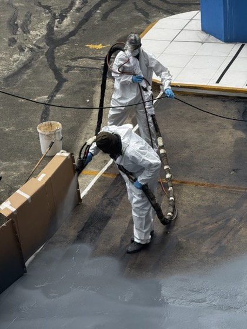
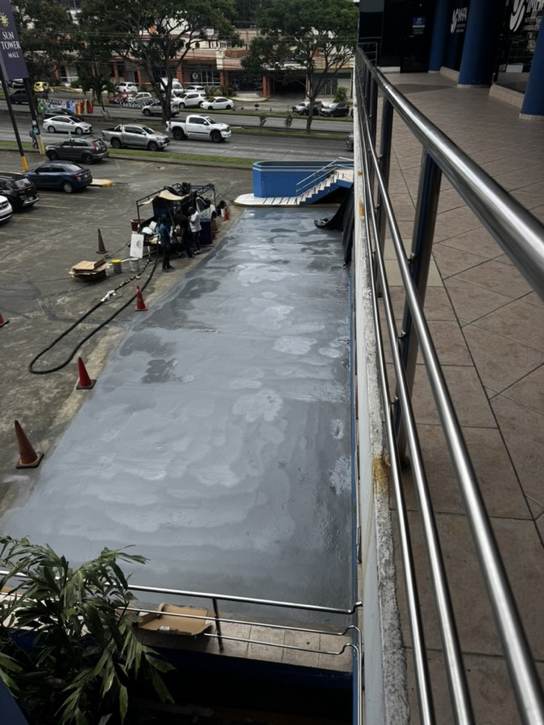
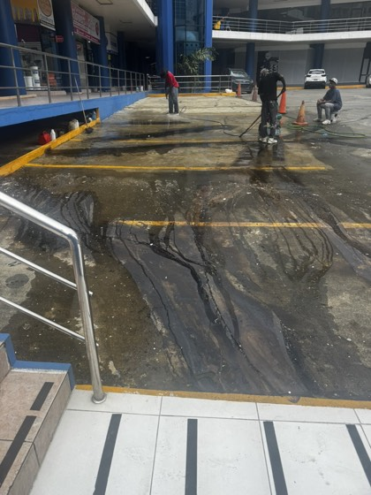
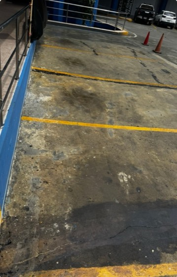
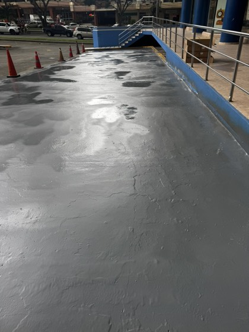

Impermeabilización · Panamá
Membrana continua.
Cero juntas.
Cero filtraciones.
Si su losa filtra, el problema son las juntas. Membrana continua de poliurea: sin cerrar el nivel, transitable el mismo día.
La poliurea en cifras, no en discurso.
Desempeño medible del material. Cada número es una propiedad verificable, no un adjetivo de marketing.
Acrílico, espuma PU y poliurea sobre el mismo techo.
La poliurea pura no cura por evaporación: reacciona. Esa sola diferencia cambia la vida útil, las juntas y el tiempo de obra.
Acrílico
Espuma PU / asfáltico

Poliurea PolysellosSi ya tuvo que reparar su techo más de una vez, el problema no es el contratista. Es el sistema.
La filtración no se veía. Se sentía en cada lluvia.
130 m² de losa de estacionamiento con filtración activa hacia niveles inferiores. Sellados con membrana continua de poliurea en un día, sin cerrar el nivel.





Tres pasos. Ningún precio de catálogo.
El costo depende del sustrato, el acceso y el área real. Por eso cada proyecto se cotiza por separado, nunca por tabla.
Nos escribe por WhatsApp
Comparta el tipo de superficie, el área aproximada y el problema que enfrenta. Sin formularios, sin costo.
Evaluamos su caso
Con esa información —o una visita técnica si el proyecto lo requiere— calculamos el precio real según sustrato y acceso.
Recibe su cotización
Precio por proyecto, garantía por escrito y fecha de aplicación. Sin letra pequeña.
Antes de escribirnos.
Si su duda no está aquí, escríbala directo por WhatsApp. Responde un técnico, no un bot.
Describa su superficie en un mensaje. Le decimos si la poliurea corresponde — y si no, también.
Consulte su caso¿El diagnóstico tiene costo?
+
No. Evaluamos su superficie y entregamos un diagnóstico técnico sin costo ni compromiso antes de cotizar.
¿Cuánto tiempo toma la aplicación?
+
La poliurea cura en segundos. La superficie queda transitable el mismo día, a diferencia de sistemas convencionales que requieren días de secado.
¿Debo detener mis operaciones?
+
No. El curado casi instantáneo permite aplicar por secciones sin detener la operación completa del edificio o la planta.
¿Se puede aplicar con lluvia o humedad?
+
Sí. A diferencia de los sistemas que curan por evaporación, la poliurea reacciona químicamente — no depende del clima para sellar la superficie.
¿Resiste el sol directo sin degradarse?
+
Sí. El sol panameño degrada el acrílico antes de lo anunciado por el fabricante; la poliurea mantiene su desempeño durante toda su vida útil.
¿Funciona sobre cualquier superficie?
+
Se adhiere a concreto, metal y la mayoría de sustratos con la imprimación correcta — por eso el diagnóstico revisa el sustrato antes de cotizar.
Cuéntenos de su proyecto.
Envíe su ubicación, el área aproximada y una foto si la tiene a la mano. Le decimos qué sistema corresponde y qué no.